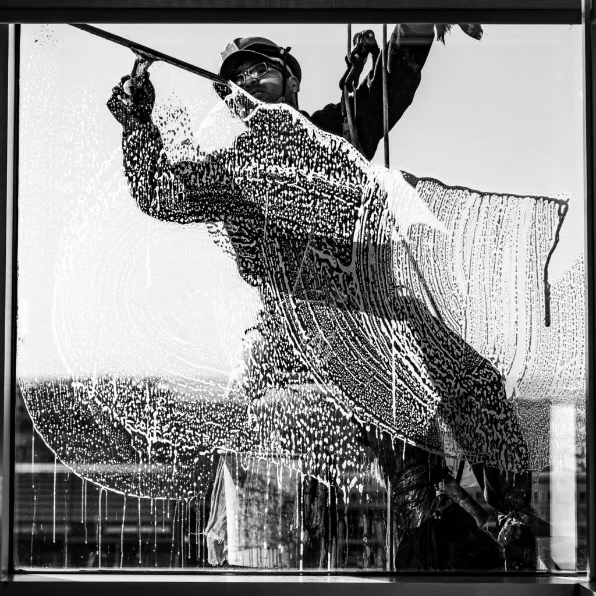

Glasbewassing
Zoveel mogelijk ambachtelijk, met emmer en ladder. Voor de ramen die lastig te bereiken zijn werken we met telescoopbewassing en osmosewater.
Kozijnen, vensterbanken en deuren nemen we vanzelfsprekend mee. Voor particulieren en bedrijven.
Ramen laten wassen? Bel ons